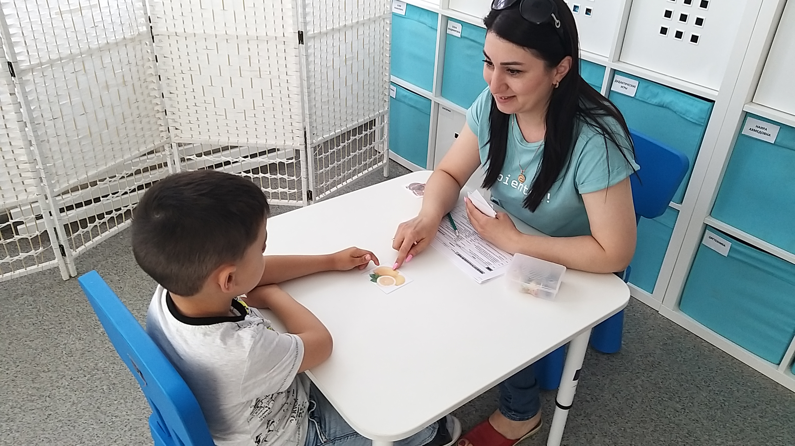
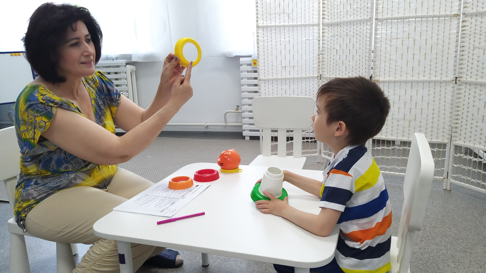
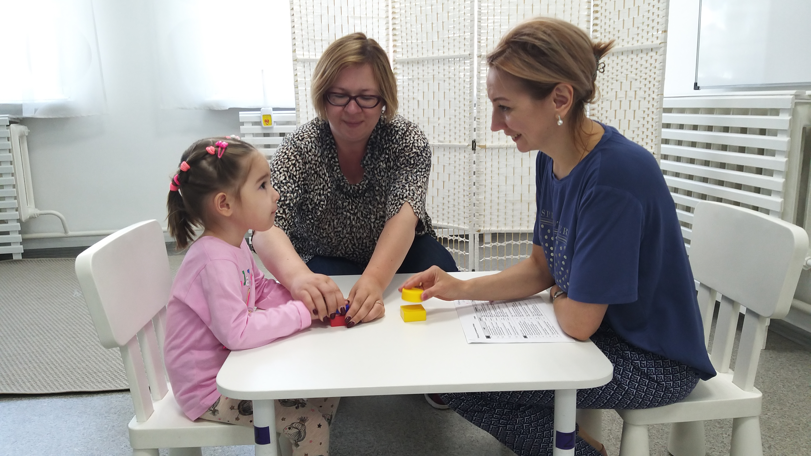
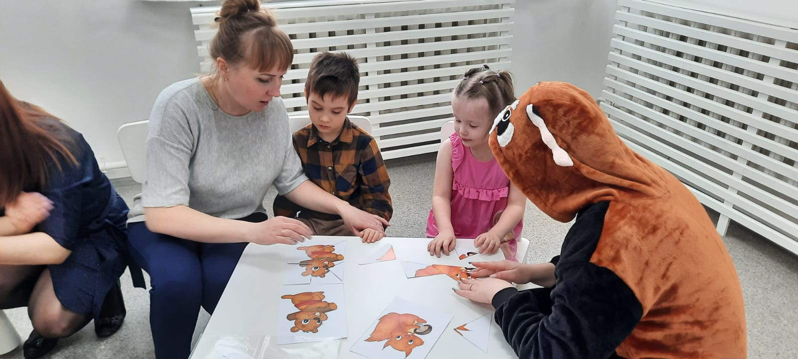

Проект "Ресурсная группа"

ЧТО ТАКОЕ РЕСУРСНАЯ ГРУППА?
Модель «ресурсная группа» позволяет детям дошкольного возраста гибко
сочетать интенсивное обучение навыкам с применением эффективных
методик и общение с нейротипичными сверстниками в обычном детском
саду.
ИСТОРИЯ ПРОЕКТА
В 2018 году казанский благотворительный фонд «В твою пользу»,
вдохновившись нашим проектом «Ресурсный класс», предложил попробовать
организовать в детском саду группу для детей с РАС. Идея была в том,
чтобы, вооружившись методами с доказанной эффективностью, максимально
качественно подготовить детей дошкольного возраста к переходу в школу.
Выбор пал на детский сад №109 Советского района г. Казани. Фондом «В
твою пользу» была подана заявка в Фонд президентских грантов, которая
получила поддержку. Целью проекта стало создание «стартовой площадки»
для комфортного перехода дошкольников с РАС в школьное пространство,
организация индивидуальной и групповой коррекционно-образовательной
работы, а также подготовка педагогов, родителей и сверстников к
взаимодействию с детьми с РАС. В сентябре 2018 года ресурсная группа
МАДОУ №109 приняла первых 10 воспитанников. Для ребят были
подготовлены комфортные помещения групп и зон сенсорной разгрузки,
оснащённых всем необходимым. Специалисты группы прошли очное обучение
базисным принципам прикладного анализа поведения у специалистов и
методистов МГППУ. Работа групп велась с применением методов
прикладного анализа поведения, имеющих доказанную эффективность, и
сопровождалась очным куратором и супервизором. В сентябре 2020 года в
проект вошли группы для детей с РАС детского сада №332, а в 2022 году
– группы детского сада №189.
РЕСУРСНЫЕ ГРУППЫ СЕГОДНЯ
В Казани ежегодно открываются группы компенсирующей направленности для
детей с РАС, и всё чаще специалисты этих групп изучают и внедряют
методы прикладного анализа поведения как основную методическую базу. В
детском саду №109 в 2023 году откроется уже четвёртая по счёту
ресурсная группа, поскольку запрос родителей очень велик. Также наша
организация продолжает курировать группы в детском саду №189.
Поведенческий подход и методы ПАП, используемые в работе, позволяют
отслеживать и фиксировать прогресс детей, а его демонстрируют 100%
воспитанников. Большая часть выпускников ресурсных группа МАДОУ №109 и
№332 продолжили обучение в общеобразовательных школах (ресурсных
классах). Этот результат наглядно демонстрирует эффективность модели
«ресурсная группа».
ПОЛЕЗНЫЕ ССЫЛКИ
• Онлайн-конференция «Методологические основы и практики по организации ресурсных дошкольных групп»
• Вебинар «Правовое регулирование обучения детей с РАС в России»
• Опыт создания ресурсной группы в детском саду в городе Уфе
• Ресурсная группа как возможность инклюзии детей с РАС в общеобразовательном детском саду



